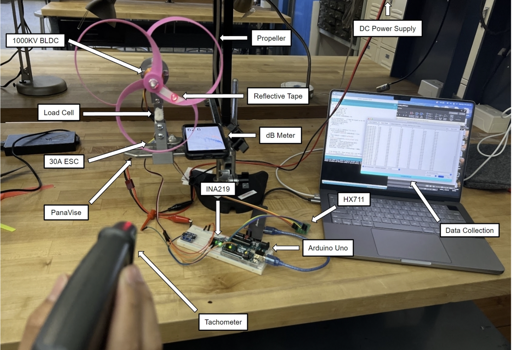
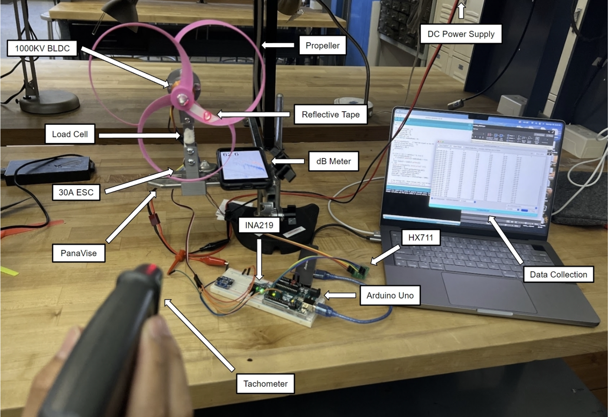

Toroidal Propeller vs. 3-Blade Propeller
Based on MIT Toroidal Propeller
This project explores the comparative performance of a toroidal propeller and a traditional 3-blade design. The evaluation focused on thrust, efficiency, and noise output using a 1kg load cell setup.
Results revealed the toroidal propeller achieved up to 30% improved efficiency, generated more thrust, and ran quieter than the conventional model. These findings support the case for innovative propeller designs in enhancing real-world performance.
Project Setup
 
